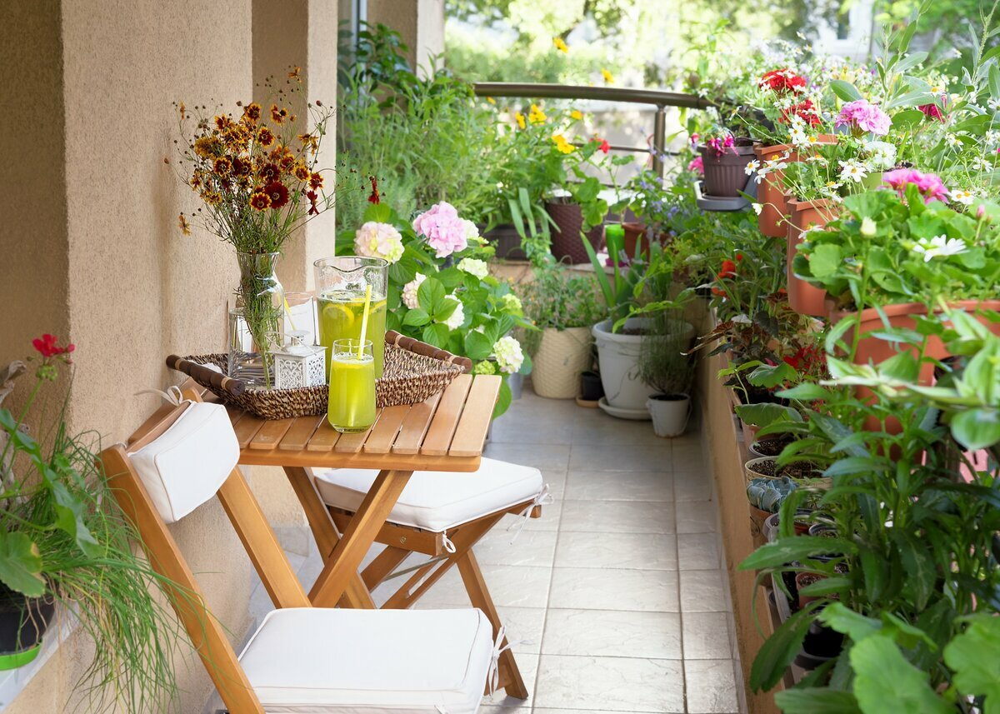

Добро пожаловать в мир балконного садоводства!
Здесь вы найдете все необходимые знания и пошаговые рекомендации, чтобы создать уютный, зелёный и красивый балкон, даже если у вас совсем нет опыта в садоводстве. Наши простые и понятные советы помогут превратить любое небольшое пространство в живой и вдохновляющий оазис.
Добавьте в свою жизнь зелень, красоту и свежесть — начните со света, воздуха и правильного выбора растений. Мы подробно расскажем про освещение, правильный уход, оптимальный подбор растений и декор, чтобы ваш балкон стал любимым уголком для отдыха и творчества.
Лучшие идеи, полезные советы и вдохновение для вашего балкона ждут вас далее на сайте. Сделайте первый шаг к созданию настоящего балконного сада, который будет радовать круглый год!
Популярные идеи для балконного сада
- Вертикальные сады для экономии пространства
- Мини-огороды с овощами и зеленью
- Яркие цветочные композиции и ароматные травы
- Использование переработанных материалов для кашпо
- Освещение и декор для уютных вечеров